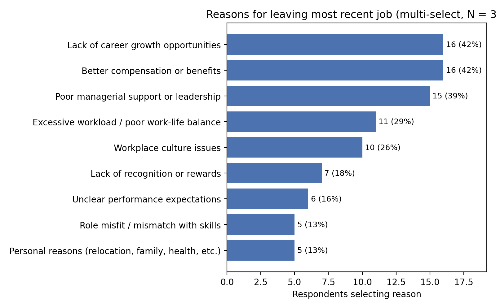
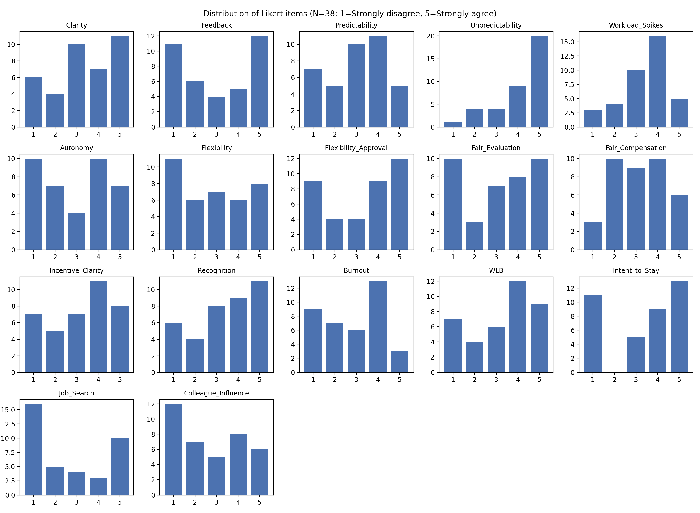
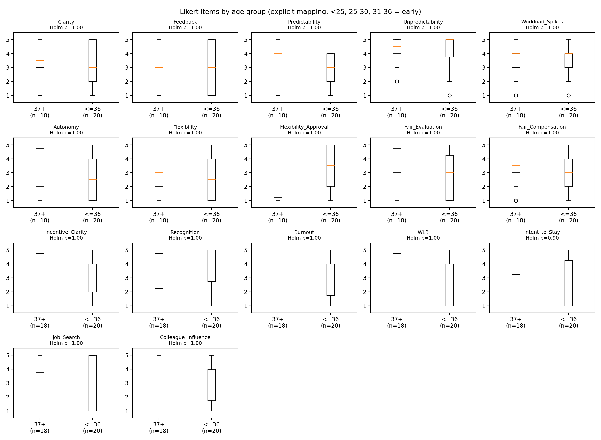
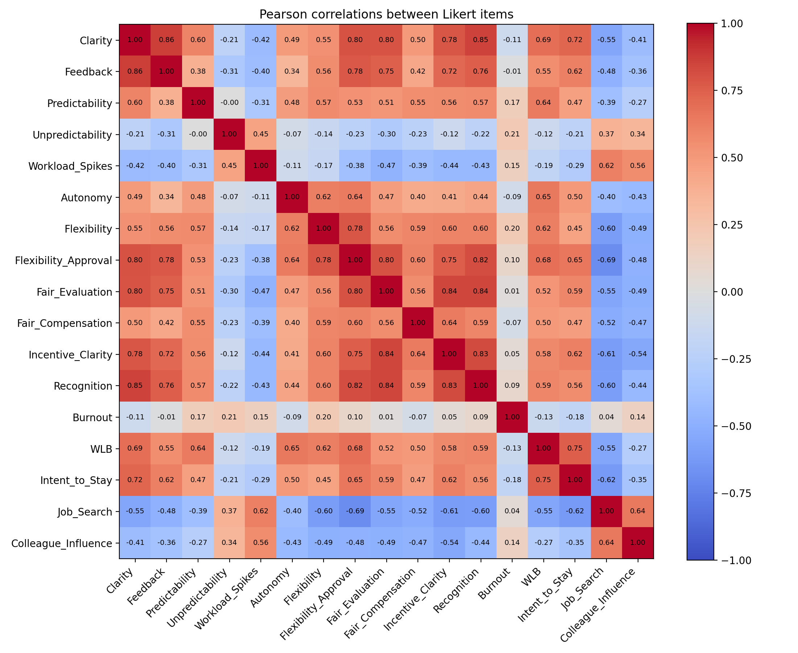
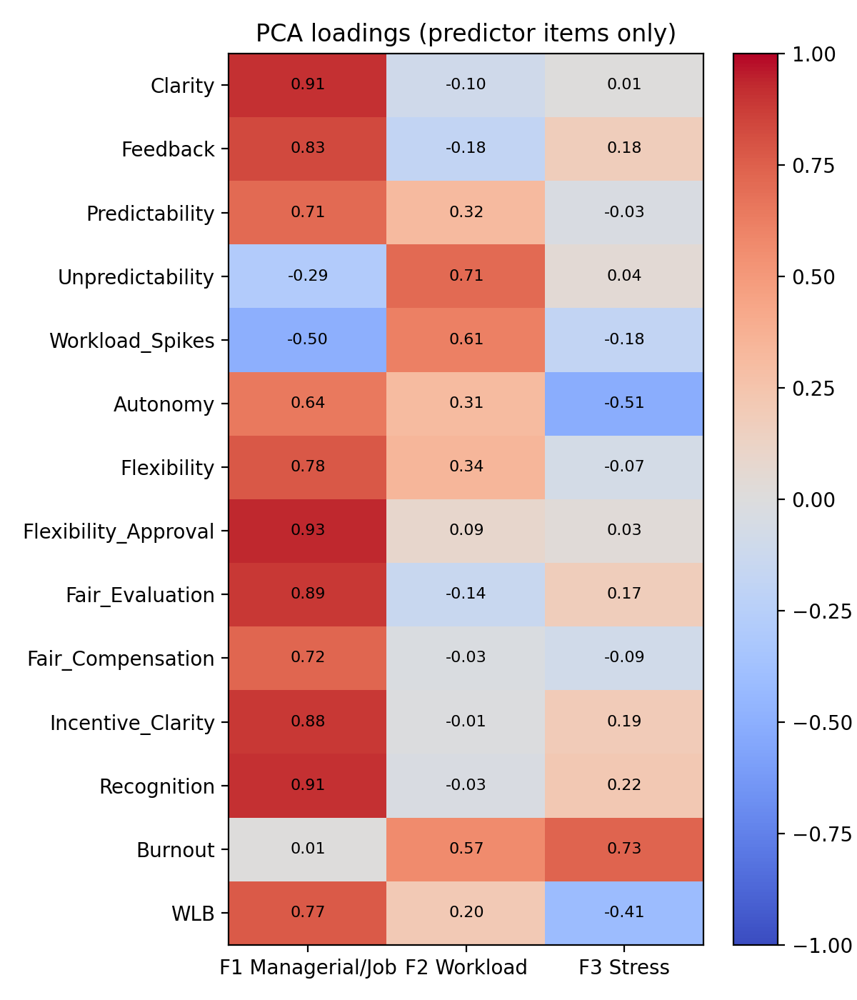
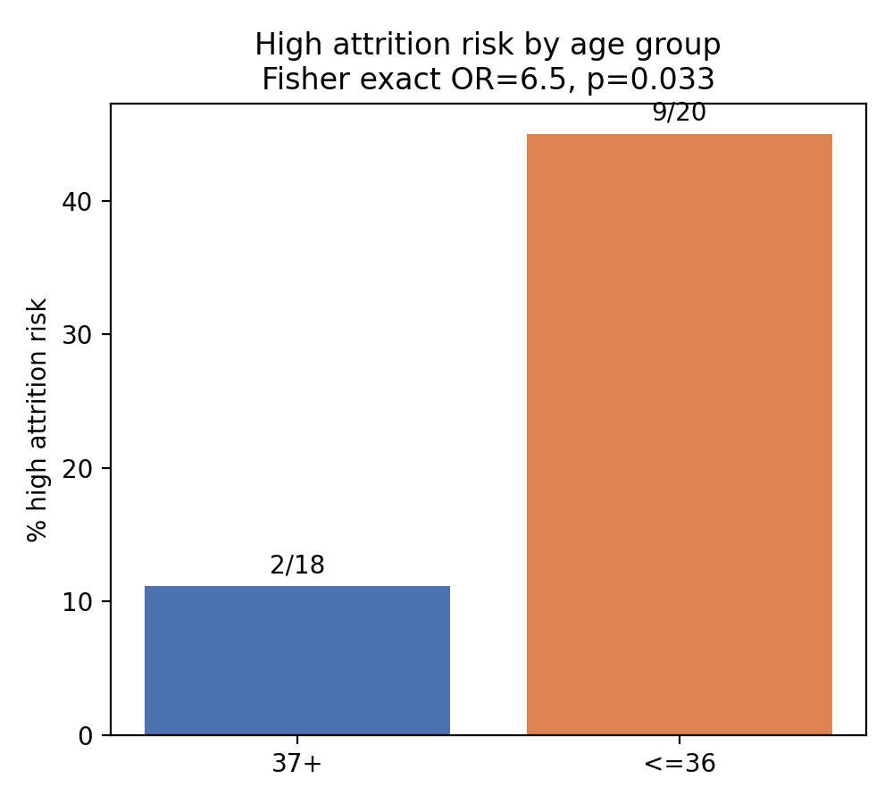

Little work in India puts managers' and employees' accounts side by side, or tests the managerial explanation against data.
Is attrition driven mainly by workforce expectations, or by gaps in managerial communication and structural predictability?
Qualitatively explore expectation mismatches between managers and employees on early-career retention.
Quantitatively identify the organisational and managerial factors linked to turnover intent.
Test whether early-career employees face more workload pressure than seniors, the "Gen Z entitlement" hypothesis.
Managerial clarity, feedback and fairness build trust and commitment (Graen & Uhl-Bien, 1995).
Sustained, unpredictable demands lead to burnout and turnover intent (Bakker & Demerouti, 2017).
Attrition follows perceived breaches of implicit promises (Rousseau, 1995).
| Proposed construct | Survey items |
|---|---|
| Managerial Quality | Clarity of expectations, feedback, fair evaluation |
| Workload Pressure | Unpredictability, workload spikes, burnout |
| Job Conditions | Autonomy, flexibility, flexibility approval, fair pay, incentive clarity, recognition |
| Outcome | High attrition risk = intent to stay ≤ 2 (of 5) |
Top industries: Banking / Financial Services, Consulting, Manufacturing. Mean experience 14.5 years, so many mid- and late-career respondents.


Burnout is spread across the scale (mean 2.84). Clarity, feedback, fair evaluation and intent to stay are bimodal: their means hide two distinct groups.


| Outcome | Strongest correlates |
|---|---|
| Intent to stay | WLB 0.75 · Clarity 0.72 · Flexibility approval 0.65 |
| Job search | Flexibility approval −0.69 · Workload spikes +0.62 · Incentive clarity −0.61 |
Managerial items are tightly linked (Clarity–Feedback r = 0.86). Burnout is nearly uncorrelated with everything, so the item may have been read inconsistently.

PCA of 14 predictor items (outcomes excluded). KMO = 0.83; Bartlett χ² = 410.9, p < .001. Parallel analysis supports one component (54% of variance); three kept to mirror the framework (73%).
| Component | Loads on |
|---|---|
| 1 · Managerial quality + job conditions | Flex. approval .93, Clarity .91, Recognition .91, Fair eval. .89 |
| 2 · Workload pressure | Unpredictability .71, Spikes .61, Burnout .57 |
| 3 · Individual stress | Burnout .73, Autonomy −.51, WLB −.41 |
Reliability α: Managerial Quality 0.92 · Job Conditions 0.91 · Workload Pressure 0.51 (0.62 without burnout)
Item mean 3.80 (≤36) vs 3.75 (37+). Welch t(34.3) = 0.16, p = .87, d = 0.05; 95% CI −0.58 to 0.68. Component 2 and Mann–Whitney tests agree.
H0 is not rejected.
45% of ≤36 (9/20) vs 11% of 37+ (2/18) report high risk. Fisher's exact OR = 6.5, p = .033. By experience (<5 yrs): 50% vs 17%, p = .061.

| Predictor (per 1 SD) | Odds ratio | 95% CI | p |
|---|---|---|---|
| C1 · Managerial quality + job conditions | 0.043 | 0.005–0.40 | .006 |
| C2 · Workload pressure | 1.50 | .42 | |
| C3 · Individual stress | 3.44 | .073 |
McFadden pseudo-R² = 0.57; LR χ²(3) = 25.9, p < .001. Adding age group did not reduce the age effect (adjusted OR = 45.8, p = .083), so managerial quality does not explain why younger people report more risk.
Train managers in goal clarity, monthly feedback and transparent evaluation.
Advance-notice policies for deadlines and resource buffers for spikes.
Structured hybrid work that pairs in-office mentoring with flexibility; fair pay and meaningful recognition.
Link team attrition to leadership evaluations, with extra attention to onboarding and early-tenure career paths.
Early-career employees in this sample were far more likely to intend to leave, but workload does not explain why.
Clearer expectations, fair evaluation, regular feedback and predictable work are the most promising levers, and should be tested in larger studies.